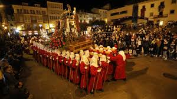

Arde Lucus
Lugo · Galicia · Recreación histórica · «Lugo vuelve a ser romana, y también castrexa.»
- El Arde Lucus recrea el encuentro entre dos culturas, la romana y la castrexa, sin declarar vencedores ni vencidos. Las dos tienen el mismo protagonismo: la historia de Lugo es tanto la de las legiones que la fundaron como la de los pueblos galaicos que vivían aquí antes de que llegaran.
- Las agrupaciones castrexas y romanas que llenan la ciudad llevan meses preparando su indumentaria, sus rituales y sus campamentos. Pertenecer a una de ellas es, para muchos vecinos de Lugo, una forma de identidad que se transmite de generación en generación.
- Caminar sobre la Muralla durante la fiesta es caminar sobre un bien declarado Patrimonio Mundial por la UNESCO, el único adarve romano completo que se puede recorrer entero. Pocas ciudades ponen su patrimonio más protegido al servicio de una fiesta así.
La esencia de la fiesta
Entre los años 15 y 13 a.C., el legado romano Paulo Fabio Máximo fundó Lucus Augusti en territorio de los coporos, un pueblo galaico, en el noroeste más remoto del Imperio. La muralla que hoy rodea la ciudad llegaría tres siglos después, pero desde el principio romanos y castrexos convivieron, no siempre en paz, en estos montes. Cada junio, Lugo vuelve a llenarse de unos y otros.
¿En qué consiste?
Arde Lucus es una recreación histórica que no tiene un único hilo narrativo: es una ciudad entera volviendo a dos épocas al mismo tiempo. Durante cuatro días, varias asociaciones de recreación histórica instalan sus campamentos dentro y alrededor de la Muralla Romana, unas de romanos y otras de castrexos, y los dos mundos conviven, se enfrentan y se mezclan en las plazas y calles del casco histórico de Lugo.
La diferencia con otras recreaciones romanas está en el peso real que tienen los castrexos, los pueblos galaicos prerromanos: pesan tanto en la fiesta como las legiones. Sus campamentos, sus rituales, sus oficios y sus batallas contra Roma son tan parte del Arde Lucus como los gladiadores o el Senado. En el Gran Desfile del sábado, romanos y castrexos desfilan juntos por la Ronda de la Muralla; al final se abrazan.
El visitante puede entrar en la fiesta a cualquier hora y en cualquier punto del casco histórico: siempre hay algo ocurriendo, un combate de gladiadores en la Praza de Santa María, una asamblea galaica en la Praza Maior, bautizos celtas, teatro de calle, artesanos trabajando en los campamentos. El corazón de ese tejido de campamentos es A Castra de Lucus Augusti, el recinto fortificado con empalizadas del Carril dos Fornos, junto a la Horta do Seminario, donde castrexos y legionarios conviven puerta con puerta. No hace falta seguir un orden. Quien quiera el programa completo lo encontrará en ardelucus.com.
Los dos bandos
Veinte asociaciones de recreación histórica dan vida al Arde Lucus, repartidas en dos bandos. Cada una tiene nombre, historia y campamento propios, y juntas sostienen la fiesta durante todo el año, no solo los cuatro días de junio.
Bando castrexo
- Tir Na n'Óg: pionera, fundada en 2008; recrea a los namarini, tribu galaica de la costa cantábrica lucense, centrada en vida cotidiana, telares y mitología celta.
- Trebas Galaicas: cultura material prerromana, metalurgia y formas tradicionales de combate galaico.
- Lvgdvnvm: asociación familiar volcada en la artesanía popular, la música vernácula y el encendido del fuego ritual, asentada en A Castra.
- Terra Copora: fundada en 2008; recrea a los coporos, el pueblo sobre cuyo territorio se fundó la ciudad, y es pionera en recrear un valetudinarium, el hospital de campaña clásico.
- Mercenarios Galaicos: guerreros del noroeste enrolados como mercenarios en los ejércitos mediterráneos; organizan el ritual nocturno del Wicker Man.
- Clan de Breogán: leyendas fundacionales de la Gallaecia, estructura familiar de los castros y herencia mítica celta.
- Lucus Icenas Miliatore: recreación militar y choque armado entre tribus locales y fuerzas invasoras.
Bando romano
- Cohors III Lucensium: fundada en 2006-2007, la primera cohorte militar de la fiesta; recrea la tropa acuartelada en Lucus Augusti y promueve la acuñación de la moneda conmemorativa.
- Caetra Lucensium: arqueología experimental, acuñación manual en ceca (Moneta Castrensis), escuela de gladiadores y vida civil romana.
- Civitas Lucensis: ciudadanía romana, leyes, comercio y administración civil del convento jurídico lucense.
- Senatus Lucus Augusti: senadores y magistrados de la urbe; protagoniza las sesiones del senado y la concesión del Civitas Honoris.
- Vestales de Lucus Augusti: sacerdotisas del templo, encargadas del encendido y apagado solemne del Fuego Sagrado de Vesta.
- Guardia Pretoriana: unidad militar de élite imperial, custodia de magistrados y combates pesados.
- Pax Romana: costumbres civiles, vestimenta aristocrática y vida cotidiana durante la Pax Augusta.
- Asemblearias de Lucus Augusti: papel jurídico, social y literario de la mujer en la Roma clásica: escritoras, abogadas y voces del Palatino.
- Lucus Equites: caballería romana, escoltas a caballo, maniobras ecuestres y escaramuzas.
- Salesiani Luci Augusti: arraigo escolar y juvenil, vinculada a la comunidad educativa salesiana de la ciudad.
- Ara Roma: espiritualidad clásica, ritos domésticos, culto a los dioses mayores y ofrendas en aras.
- Kertix: recreación y animación en la confluencia entre gladiadores, libertos y oficios de calle.
- Vindicta Recreación Histórica: la más reciente en incorporarse; rigor arqueológico e indumentario estricto de finales del siglo I y principios del siglo II d.C.
La indumentaria marca la diferencia a simple vista: los castrexos visten lino áspero y lana basta teñida con tintes vegetales, capas de sayal, torque de bronce o plata al cuello y escudo circular sin umbo metálico (caetra); los romanos llevan el equipo de la cohorte, cota de malla, casco tipo Montefortino o gálico y caligae de cuero claveteado.
Historia y significado
Lucus Augusti fue fundada entre los años 15 y 13 a.C., tras las Guerras Cántabras, por el legado imperial Paulo Fabio Máximo en honor al emperador Augusto, sobre territorio de los coporos. Era la capital del convento jurídico romano del noroeste peninsular, en la confluencia de varias vías romanas, lo que la convirtió en un nudo comercial y administrativo de primer orden. La muralla que hoy la rodea es tres siglos posterior: se construyó a finales del siglo III d.C., como defensa frente a las incursiones germánicas. En el año 2000, la UNESCO la declaró Patrimonio Mundial: la única muralla romana del mundo que conserva su perímetro completo y es accesible en toda su longitud.
El Arde Lucus arrancó en junio de 2001 como una jornada nocturna juvenil, una Festa Romana impulsada por la Concellería de Xuventude del Concello de Lugo. En 2002 se constituyó ya como la fiesta histórica de varios días y participación diurna de toda la ciudad que es hoy. En 2011 obtuvo el reconocimiento de Festa de Interese Turístico Galego; en 2017, el de Fiesta de Interés Turístico Nacional; y en 2023, el de Fiesta de Interés Turístico Internacional.
Cuándo se celebra
El Arde Lucus se celebra el tercer fin de semana de junio, en torno al solsticio de verano, siempre que no coincida con el Corpus Christi ni con la Ofrenda del Antiguo Reino de Galicia; en ese caso, el Concello de Lugo desplaza la fecha. La última edición se celebró del jueves 18 al domingo 20 de junio de 2027, con el sábado 20 como día grande: Gran Desfile por la Ronda de la Muralla y Circvs Maximvs nocturno.
⚠️ El Concello de Lugo confirma las fechas de cada edición en ardelucus.com. Esta ficha se revisará en diciembre para incorporar el calendario del año siguiente en cuanto se publique.
Marco normativo
El reconocimiento oficial de la fiesta y de la ciudad que la sostiene se acumula en varios hitos:
- Festa de Interese Turístico Galego por Resolución de 3 de mayo de 2011 de la Dirección Xeral de Turismo de la Xunta de Galicia, publicada en el Diario Oficial de Galicia (DOG) n.º 96, de 19 de mayo de 2011.
- Fiesta de Interés Turístico Nacional por Resolución de 1 de marzo de 2017 de la Secretaría de Estado de Turismo, publicada en el BOE n.º 69, de 22 de marzo de 2017, disposición 2965.
- Fiesta de Interés Turístico Internacional por Resolución de 13 de marzo de 2023 de la Secretaría de Estado de Turismo, publicada en el BOE n.º 70, de 23 de marzo de 2023, disposición 7542.
- La Muralla Romana de Lugo, escenario de la fiesta, está declarada Patrimonio Mundial por la UNESCO desde el 30 de noviembre de 2000 (criterio iv).
Los cuatro días
- Jueves · La llegada La fiesta arranca al atardecer en el Paseo Fluvial del Miño, con el acto de inicio junto al Ponte Romana. Desde allí, las legiones romanas comandadas por el general Caio Antistio el Viejo entran en la ciudad por el puente y toman Lucus Augusti. La noche continúa con el Rito a la diosa Diana en la Praza de Santa María y el Encendido del Fuego Sagrado de Vesta por las Vestales en el fondo de la Praza Maior, donde permanecerá encendido hasta el domingo.
- Viernes · Dos mundos en tensión El día más intenso en actividad simultánea. Por la mañana y tarde, los campamentos abren al público con talleres, artesanía, combates de gladiadores en la Praza de Santa María y el Macellum, el mercado romano. Al atardecer, las asociaciones castrexas celebran la Asamblea Galaica en la Praza de Santa María, donde declaran formalmente la guerra a Roma. Por la noche, el Senado de Lucus Augusti se reúne en la Praza Maior para debatir y votar; fuera de las murallas, los mercenarios galaicos celebran el ritual del Wicker Man en la Horta do Seminario.
- Sábado · El día grande Por la mañana, la ciudad recibe a tropas y tribus de fuera (asociaciones de Asturias, La Rioja, Rumanía, Cartagena y otras ciudades) en la Recepción de tropas extranjeras y el nombramiento de los Civitas Honoris. A mediodía, nueva sesión del Senado. A media tarde, el Asalto al monte Medulio enfrenta a la Guardia Pretoriana con las tribus castrexas. Al atardecer, el Gran Desfile recorre la Ronda de la Muralla desde la Porta de Santiago: romanos y castrexos juntos, durante una hora y media, por encima y junto a la muralla que separa sus mundos. La noche cierra con el Circvs Maximvs Nocturno (entrada de pago) y un concierto de música celta.
- Domingo · El cierre La jornada más familiar. Por la mañana, el Desfile de los Scholarum (los colegios de Lugo caracterizados) recorre la Praza Maior y la Ronda de la Muralla. A lo largo del día, venta de esclavos teatralizada, escuela de gladiadores, talleres infantiles y el Nacimiento de un pueblo galaico-romano en la Ronda de la Muralla. Al atardecer, el Apagado del Fuego Sagrado de Vesta cierra el ciclo narrativo que se abrió el jueves.
La Muralla y el patrimonio romano de Lugo
La Muralla Romana de Lugo es el escenario del Arde Lucus, no su telón de fondo. Los desfiles discurren por su Ronda, los actos se ubican junto a sus puertas y el visitante camina sobre ella durante los cuatro días de fiesta. Es la única muralla romana del mundo que conserva su perímetro completo (2.117 metros, 71 torreones, cuatro puertas) y que puede recorrerse en su totalidad. La UNESCO la declaró Patrimonio Mundial en 2000.
Además de la Muralla, Lugo conserva las Termas Romanas y restos del Foro Romano en el casco histórico. Durante los días del Arde Lucus, el Concello suele organizar visitas guiadas y accesos especiales a estos espacios; consulta la programación en la web oficial antes de la visita.
Música y sonido
El Arde Lucus tiene dos registros sonoros muy distintos. De día, los campamentos funcionan cada uno con su propio sonido: percusión castrexa en un extremo, martillos de artesano en otro, espadas chocando en la Praza de Santa María. No hay un escenario central; el sonido cambia según dónde estés. De noche, el tono cambia: los espectáculos de fuego en la Praza Maior, el ritual del Wicker Man y los conciertos de música celta le dan a la fiesta un registro más oscuro y envolvente.
El momento de mayor intensidad sonora es el Gran Desfile del sábado: la percusión de las columnas castrexas y el paso marcial de las legiones recorriendo la Ronda de la Muralla durante hora y media. Para escucharlo bien, sitúate en un punto elevado de la Muralla o en la Praza Maior al paso del cortejo.
Lvcvs Cvltural
El Arde Lucus no empieza el jueves: lo precede Lvcvs Cvltural, semanas de programación cultural con conferencias de arqueología, talleres de patronaje de época y de cocina histórica, abiertos también al público. Quien llega a los cuatro días grandes no empieza de cero; la ciudad lleva semanas calentando.
No te lo puedes perder
El Gran Desfile por la Muralla
Sábado por la tarde · Ronda de la MurallaRomanos y castrexos desfilan juntos durante hora y media por la Ronda de la Muralla desde la Porta de Santiago. Es el único momento en que los dos bandos que llevan cuatro días enfrentados comparten el mismo espacio y el mismo paso. Al final, se abrazan.
¿Por qué no perdértelo?
Un desfile de recreación histórica sobre una muralla romana del siglo III declarada Patrimonio Mundial UNESCO. No hay otro escenario igual en ninguna otra fiesta de España.
La Asamblea Galaica y la Declaración de Guerra
Viernes al atardecer · Praza de Santa MaríaLas asociaciones castrexas se reúnen en asamblea para debatir y votar la declaración de guerra a Roma. Es el acto más político de la fiesta: aquí los galaicos tienen voz propia, su propio ceremonial y sus propias razones, con el mismo peso narrativo que Roma.
¿Por qué no perdértelo?
La mayoría de recreaciones históricas de temática romana presentan a Roma como protagonista indiscutible. Aquí, la Asamblea Galaica pone en cuestión esa lectura cada viernes por la noche.
El Encendido y Apagado del Fuego de Vesta
Jueves noche y domingo tarde · Praza MaiorLas Vestales de Lucus Augusti encienden el Fuego Sagrado de Vesta el jueves por la noche en el fondo de la Praza Maior. La llama permanece encendida durante los cuatro días. El domingo, las mismas Vestales la apagan, cerrando el ciclo. Son los dos únicos actos en los que la fiesta guarda silencio de verdad.
¿Por qué no perdértelo?
El Encendido y el Apagado enmarcan la fiesta entera. Ver los dos, el jueves y el domingo, es la única manera de sentir que se ha vivido el Arde Lucus de principio a fin.
El Wicker Man
Viernes a medianoche · Horta do SeminarioLos Mercenarios Galaicos queman una figura de mimbre en un ritual nocturno de origen céltico que tiene lugar fuera de las murallas, en la Horta do Seminario. Es el acto más oscuro y más alejado del centro de la fiesta, y por eso el menos conocido y el más memorable para quien lo encuentra.
¿Por qué no perdértelo?
El Wicker Man no está en el programa principal, ocurre a medianoche y fuera del circuito habitual. Quien lo busca, lo encuentra. Quien no lo busca, no lo encuentra. Así de sencillo.
Consejos prácticos
- El Arde Lucus acepta y anima a los visitantes a venir con vestimenta de época, romana o castrexa. Varias tiendas de Lugo alquilan trajes durante los días previos a la fiesta.
- Lugo tiene buenas conexiones en tren y autobús desde A Coruña, Santiago de Compostela y Madrid, y el casco histórico se recorre a pie; la Muralla es el principal eje de movimiento.
- Las entradas del Circvs Maximvs se ponen a la venta con días de antelación en entradaslugo.es y se agotan rápido. Si quieres verlo, no esperes al último momento.
- El Arde Lucus dispara la ocupación hotelera de Lugo. Conviene reservar con semanas de antelación si vas el fin de semana grande.
- Subir a la Muralla y recorrerla es gratuito y puede hacerse en cualquier momento de los cuatro días. De noche, con la fiesta en marcha en las plazas del casco histórico, tiene una luz y un ambiente que de día no tiene.
- Lugo es conocida por las tapas gratuitas con cada consumición en la Rúa da Cruz. Durante el Arde Lucus, los bares del centro adaptan su oferta con referencias romanas y castrexas, pero el pulpo á feira y el lacón con grelos siguen siendo los platos de referencia.
- No cruces un desfile en movimiento ni interrumpas una representación en curso: los actos se desarrollan en plazas y calles abiertas, pero están en marcha mientras tú miras.
- El adarve de la Muralla es un bien de máxima protección y buena parte de su recorrido no tiene barandilla. No te sientes ni sobrecargues los petriles originales.
Vocabulario festero
- Castrexo / Castreño
- Perteneciente a la cultura castrexa, la civilización prerromana de los pueblos galaicos que vivían en castros, poblados fortificados en altura, antes y durante la llegada de Roma. En el Arde Lucus, los grupos castrexos recrean esa cultura con el mismo nivel de rigor que los romanos.
- Coporos
- El pueblo galaico prerromano sobre cuyo territorio se fundó Lucus Augusti. Varias de las tribus castrexas de la fiesta reivindican esa herencia.
- Lucus Augusti
- Nombre romano de Lugo, fundada entre los años 15 y 13 a.C. como capital del convento jurídico del noroeste peninsular. El nombre significa «bosque sagrado de Augusto».
- A Castra
- El campamento fortificado con empalizadas que es el corazón logístico de la fiesta, instalado en el Carril dos Fornos, junto a la Horta do Seminario. Castrexos y legionarios conviven puerta con puerta durante los cuatro días.
- Lvcvs Cvltural
- El programa de conferencias de arqueología, talleres de patronaje de época y cocina histórica que, durante las semanas previas, prepara a la ciudad antes de los cuatro días grandes.
- Vestales de Lucus Augusti
- Asociación local que encarna a las sacerdotisas de Vesta en el Arde Lucus. Son las responsables del Fuego Sagrado que se enciende el jueves y se apaga el domingo.
- Macellum
- Mercado romano. En el Arde Lucus, el Macellum es el espacio de artesanía y gastronomía de inspiración romana y castrexa que permanece abierto durante los cuatro días de fiesta. Entre los oficios que se ven en vivo está la acuñación a martillo de la moneda castrense, la Moneta Castrensis.
- Circvs Maximvs
- El espectáculo de gladiadores y acrobacias que se celebra en la explanada del Pabellón Municipal los días de mayor afluencia. Requiere entrada de pago.
- Civitas Honoris
- Distinción que el Senado de Lucus Augusti otorga cada año a personas o entidades que han contribuido de forma destacada a la fiesta o a la ciudad.
- Wicker Man
- Ritual de origen céltico en el que los Mercenarios Galaicos queman una figura de mimbre. Se celebra a medianoche del viernes en la Horta do Seminario, fuera del circuito principal de la fiesta.
- Scholarum
- Término latino para referirse a los colegios. El Desfile de los Scholarum del domingo es el desfile de los centros educativos de Lugo, cuyos alumnos participan caracterizados de época.
- Bodas Celtas y Bodas Romanas
- Dos ritos nupciales históricos abiertos a cualquier pareja que quiera casarse dentro de la fiesta: la boda celta, oficiada por un druida castrexo, y la boda romana, por el rito clásico de la confarreatio. Se celebran durante los días de Arde Lucus y cualquiera puede asistir.
Galería


Enlaces útiles
- Arde Lucus: web oficial de la fiesta
- Entradas Lugo (Circvs Maximvs y actos de pago)
- Turismo de Lugo (Concello)
- Turismo de Galicia (Xunta)
Última verificación de enlaces: 2026-10-16
Preguntas frecuentes
- ¿Cuándo se celebra el Arde Lucus?
- El tercer fin de semana de junio, en torno al solsticio de verano, siempre que no coincida con el Corpus Christi ni con la Ofrenda del Antiguo Reino de Galicia. La última edición se celebró del 18 al 20 de junio de 2027. El Concello de Lugo confirma las fechas de cada edición en ardelucus.com.
- ¿Qué es el Arde Lucus exactamente?
- Una recreación histórica del origen de Lugo durante la época romana. Lo singular es que no solo recrea el mundo romano: también el mundo castrexo (galaico prerromano), y los dos conviven y se enfrentan durante cuatro días dentro y alrededor de la Muralla Romana de Lugo, Patrimonio Mundial UNESCO desde 2000.
- ¿Quién puede participar caracterizado?
- Cualquier persona puede asistir con vestimenta de época, romana o castrexa. Las actividades organizadas las gestionan las asociaciones de recreación histórica. La web oficial publica cada año las vías de participación disponibles.
- ¿Todos los actos son gratuitos?
- La mayoría sí. El Circvs Maximvs requiere entrada de pago (6€ en la última edición). Las entradas se venden en entradaslugo.es y se agotan con días de antelación.
- ¿Qué queda de la época romana en Lugo?
- La Muralla Romana (Patrimonio Mundial UNESCO, 2000) es la única del mundo con perímetro completo accesible. Lugo conserva además las Termas Romanas y restos del Foro Romano en el casco histórico.
Otras fiestas que te van a interesar


